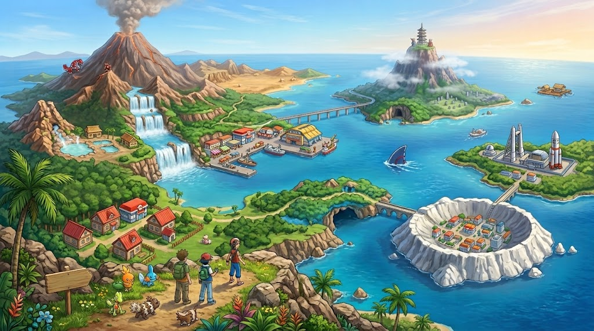

Hoenn
Região #03 · 135 Pokémon

Notas do Professor sobre a Região:
" Hoenn ! Uma região cheia de natureza, aventuras e muitos Pokémon fascinantes. Por aqui, podemos encontrar cidades cercadas por natureza, florestas, montanhas, cavernas e enormes áreas oceânicas que tornam a região ainda mais especial!
Muitos Pokémon diferentes vivem por toda região, e alguns deles possuem características bastante curiosas. A região abriga 135 novas espécies de Pokémon, aumentando ainda mais a diversidade de criaturas já conhecidas!
Se você pretende explorar Hoenn,prepare-se para passar bastante tempo ao ar livre! Há muitos lugares para descobrir, desde pequenas ilhas até vulcões e áreas submarinas. Observe bem os arredores e nunca deixe de investigar um lugar novo — você nunca sabe qual Pokémon pode encontrar!
— Prof. Birch